The forgotten wrecks of Malaysia's east coast — and what a curious diver finds when he stops looking at the famous ones.
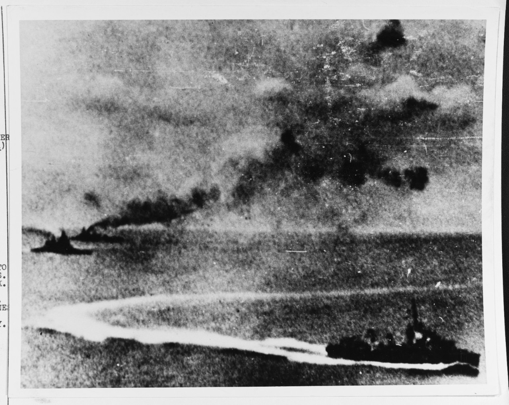
On the morning of 10 December 1941, about seventy miles off Kuantan, the age of the battleship ended in under two hours. HMS Prince of Wales and HMS Repulse — the most powerful ships Britain had sent east — were sunk by waves of Japanese aircraft, with no carrier and no air cover of their own. They were the first big warships ever sunk by aircraft alone in the open sea, and they took more than eight hundred men down with them. Eighty years later they are still the most famous thing in this water: protected war graves, and the wrecks behind almost every story told about diving Malaysia's east coast.
But fame casts a shadow. It pulls every story toward those two hulls and leaves the rest of the coast in the dark — a scattered fleet of smaller, stranger, mostly nameless wrecks that almost nobody dives, reads about, or writes up. We tend to assume the real mystery lives where the famous wrecks do: deep, far offshore, hours of boat time and a serious gas plan. The ninety-metre, technical, expedition kind of wreck.
That assumption is what this article is about. Because the most genuinely unsolved wreck I have ever dived was not deep and not technical at all — and still, nobody could tell me with any confidence what it was. On this coast, the unknown is shallower than the legend suggests. You just have to look past the giants.
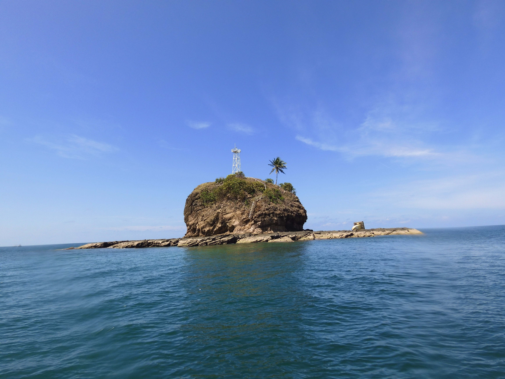
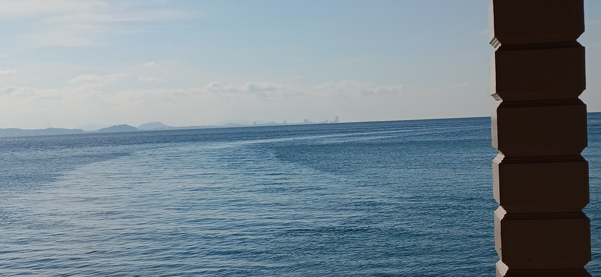
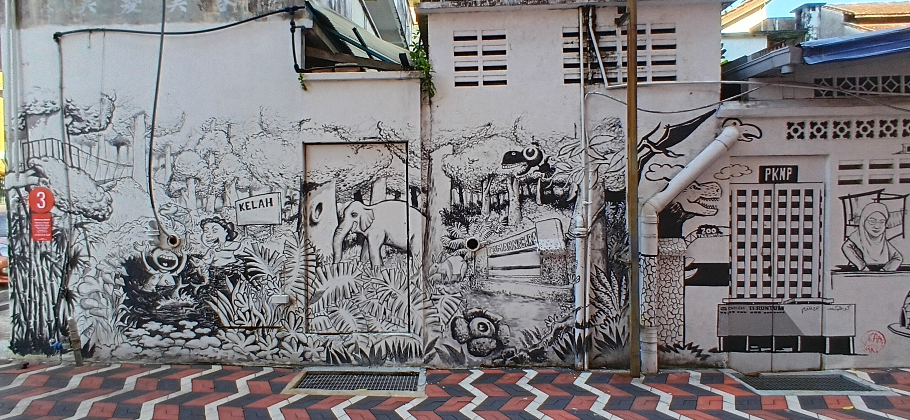
The east coast between Johor and Terengganu. The diving runs through all of it, and the surface time is not the gap between dives.
For most of the diving world, the east coast of peninsular Malaysia is not a wreck destination at all. It is reefs and turtles and the long monsoon shutdown, Tioman and Perhentian on the postcards. The history underneath is mostly forgotten, even locally, and it is richer than the postcards let on. For most of the last century this was a working coast of small ports and coastal traders, moving tin and timber and rubber south. Then, for four hard years in the 1940s, it became a war corridor. The opening battles of the Pacific war were fought right here, along the beaches from Kota Bharu down to Kuantan, and a lot of steel went to the bottom in the process.
What strikes you, if you dive it the way I did, is that the coast itself is the trip. You don't fly into one resort and dive a single bay. You move — Mersing, Rompin, Kuantan, Kuala Dungun, Marang, Merang — and the country changes as you go. The language softens, the food shifts, the rhythm of the fishing jetties and the kampung markets marks the kilometres better than any signpost. By the time you reach Terengganu you have crossed several worlds. The diving runs through all of it, and the surface time — the long drives, the shore days, the boatmen's offhand stories — is not the gap between dives. It is half the point.
I should be honest about the water, because experienced divers will want to know. By depth, these are not hard dives. The two wrecks I am about to describe sit at depths most of you would call a relaxed day. What makes this coast demanding is everything around the depth: a current that can switch on below twenty metres and turn a careful look-around into a drift, swell that closes the season for months, and visibility that runs from decent to genuinely bad with little warning. You don't come here for the depth. You come, if you come at all, for what is in the water and for what nobody can yet tell you about it.
How much is down there? The honest answer is that nobody seems entirely sure, and that is the story. Around seventeen WWII wrecks are recorded just in the stretch from Tioman to Terengganu — and that is only one part of the coast; Malaysian waters as a whole hold many more. A few are known to history, if not to divers: Prince of Wales and Repulse, of course, but also the submarines O-16 and K-XVII, and Japanese ships like the Guoshin Maru and the Hatsutaka that have at least reached local diving circles. The rest are little more than database entries — recorded lost somewhere in this water, with no trip reports, no photos, no posts, and no real certainty that a mark on a chart is the ship whose name sits next to it. Some aren't charted at all. Some show up only as a bare "?".
That uncertainty isn't a hole in my research. It is the actual state of these wrecks, and it is worth sitting with. A name in the record is not the same as a wreck on a chart, and a wreck on a chart is not always the right name for that steel. Matching the two — the names history gives us to the hulls divers actually find — is the unfinished work of this coast. And it is work that belongs first to the people who live and dive here.
A name in the record is not a wreck on a chart, and a wreck on a chart is not always the name beside it. These are some of the names history gives us for this stretch of coast — matching them to the steel is the unfinished work.
| Name | What the record says |
|---|---|
| HMS Prince of Wales | Battleship, war grave |
| HMS Repulse | Battlecruiser, war grave |
| O-16 / K-XVII | Submarines |
| Guoshin Maru | Japanese ship |
| IJN Hatsutaka | Japanese ship |
| CD-144 | Escort vessel, ~740 GT |
| Nanshin Maru 19 | Tanker, ~843 GT |
| Samui MV | Tanker, ~1,458 GT |
| Pahang Maru | Transport, ~200 GT |
| SS Hai Tung | Transport, ~1,172 GT |
| Gyoyo Maru | Transport |
| HMS Thanet | Destroyer |
| Cha 50 | Submarine chaser |
| Sarawak Maru | Tanker, ~5,136 GT |
Looking at that list, a thought crept up on me, and I want to put it carefully, because it is easy to read as a boast. There are more recorded wrecks along this part of the coast than there are around Coron, in the Philippines — probably the most famous WWII wreck-diving destination in Southeast Asia. Coron has around fourteen documented wrecks. I am not saying this coast is better. Coron's wrecks are bigger, far better preserved, and dived in much kinder water than the open South China Sea ever gives you. More importantly, they are finished: identified, surveyed, named and written up, their histories settled and shared.
The real difference is what kind of trip each one is. Dive Coron and you are mostly tied to the town or a remote resort — a superb, self-contained destination where the answers are already in the back of the guidebook. Choose Malaysia's east coast and you get the opposite deal: fewer certainties, harder water, and a journey through one of the most varied stretches of the peninsula, where the marine life is richer and the questions are still open. Coron is a solved place you visit. This coast is an unsolved one you travel through. Neither is lesser. They are just not the same trip, and the second kind is getting rare.
So why do these wrecks stay blank, when there is clearly a layer of local knowledge — operators, divers, historians who know this water far better than I ever will? Some of the quiet is deliberate and fair enough: a wish to protect fragile sites, and a hard-earned wariness of drawing the wrong kind of attention. (Prince of Wales and Repulse were stripped by illegal salvagers — a wound this community hasn't forgotten, even if the worst of that pressure on the smaller wrecks has eased.) But a lot of it is simpler. These wrecks sit just outside the famous names, in unglamorous water, so the questions just don't get asked. Nobody bothers.
That, for me, is the real invitation. If you want a genuine mystery to put your own eyes on, you don't need a technical setup and an expedition offshore. The diving itself is within reach of any competent diver. What it asks for instead is some effort to get there — a long boat ride, sometimes an island, sometimes a site that only gets dived now and then — and the patience to look closely and ask the people who already know more than the charts do. Two of those wrecks are why I am writing this at all.
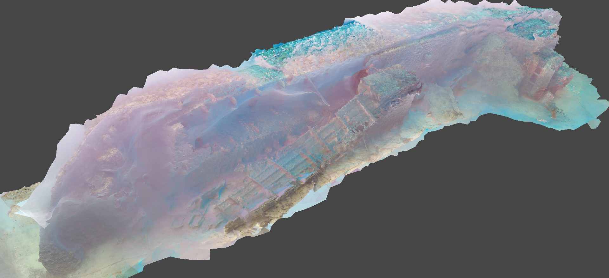
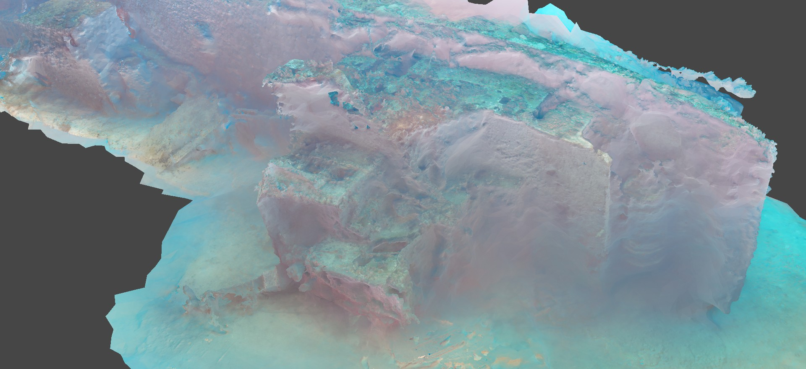
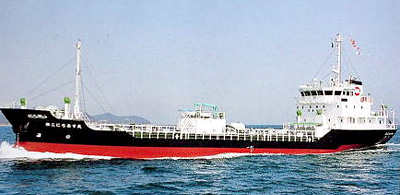
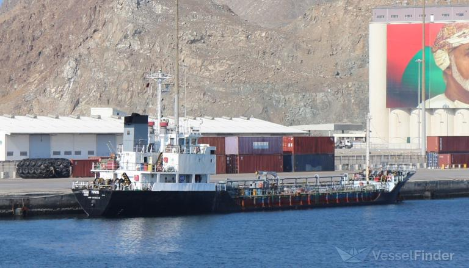
About forty-five kilometres off Kuantan, around an hour and a half by speedboat, lies a wreck the diving community long ago agreed to call a World War II Japanese oil tanker. The label gets repeated across forums and trip reports with the confidence that comes from repetition, not from anyone going down to settle it. I dived it twice — and the more I looked, the less the easy answer held up.
There are, it turns out, three different names attached to this one hull. For years it has been identified as the Nichi Asu Maru, a Japanese coastal tanker. The UK Hydrographic Office puts a different ship at the spot — the MV Marvin 1, a Japanese-built coastal tanker that developed a heavy list in bad weather and sank in November 1992. And the old Admiralty charts list a third name nearby, the Nanshin Maru, a wartime Japanese oiler lost in 1945 — though that one charts a fair distance from the dive site, far enough that it almost certainly isn't the wreck we are visiting. (It is worth saying plainly: I suspect Nichi Asu Maru and Nanshin Maru get quietly mixed up precisely because they sit near each other in the record, but I've found nothing that actually links them.) Three names, one set of coordinates I won't be printing, and one hull on the bottom.
A photogrammetry model of the wreck, pieced together from our dive footage, helped more than my memory ever could. It is not a perfect model — the current, the poor visibility and amateur gear all leave their marks on it — but it does one thing well: it lets you see the whole hull at once, instead of the few details you carry back from a single dive. And seen whole, almost everything about this ship points away from the war and toward a modern build.
The superstructure sits right at the stern. On its own that proves nothing — some small Japanese wartime tankers were built that way too. But the look of it is wrong for the 1940s: the proportions and the window layout read as commercial, decades too late. The hull is a clearer tell. Wartime emergency-built tankers were boxy and angular, flat-plated and sharp-edged, made to be cut and welded fast rather than shaped for efficiency. The hull in the model is smooth and round-bilged, full of the gentle curves of a peacetime commercial design. The bow is fuller and more upright than a 1940s ship's would be. And the mast on top of the bridge — which, remember, sits right aft — carries mountings for radio-navigation gear of a kind that simply didn't exist during the war. That equipment points to a build from the 1970s into the early GPS era at the earliest. There is even a family likeness to the output of a particular Japanese coastal shipyard in the 1980s; those yards kept a consistent house style, and that survives underwater better than paint does.
None of which closes the case, and I won't pretend it does. There are honest complications. Plates with Japanese characters have been found in the engine compartment — which confirms the ship was Japanese-built but says nothing about which Japanese ship, since all three candidates qualify. There is a story, from people who know the site, of an anti-aircraft gun once seen near the wreck and now gone; tempting as that is, surplus military hardware turned up as cargo and curiosity all over this region after the war, and it needn't mean a warship. And, most awkwardly for my tidy modern theory: local divers in 2016 reported reading the name Nichi Asu Maru on the starboard side — yet I can find no record anywhere of that ship ever being renamed Marvin 1. Two well-supported identities, and no paper bridge between them.
So I won't tell you what this wreck is, because I don't know, and the people who could settle it haven't yet had the chance. What would close it is small and specific: a builder's plate from the bridge or engine room, an engine maker's plate, or a careful hull measurement checked against the old Lloyd's registers for each candidate. The model is built. The candidates are defined. What's needed now isn't more exploring but one patient dive aimed at documentation — and I'd be glad just to have helped frame the question.
| Nichi Asu Maru | MV Marvin 1 | Nanshin Maru | |
|---|---|---|---|
| Era | 1960s coastal tanker | Built 1981, sank Nov 1992 | WWII oiler, lost 1945 |
| Length | ~80 m | ~63 m | — |
| The case for | Name reportedly read on starboard side, 2016 | Charted at this position by UKHO; modern hull / mast / bow form fits | Listed on the old Admiralty charts for the area |
| The case against | No record of a rename to Marvin 1 | No record of a rename from Nichi Asu Maru | Charts a long way off — effectively ruled out |
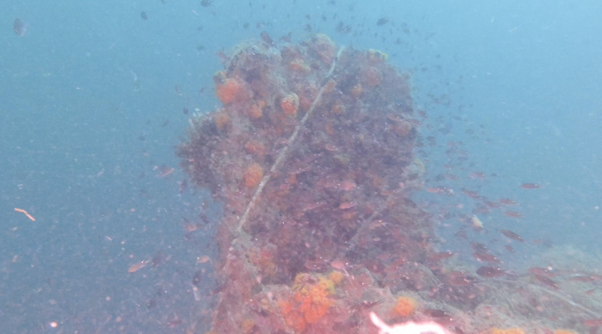
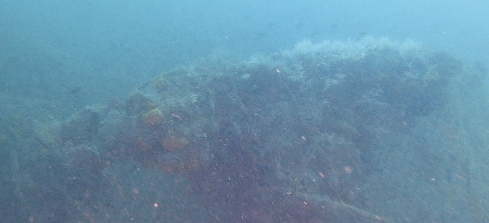
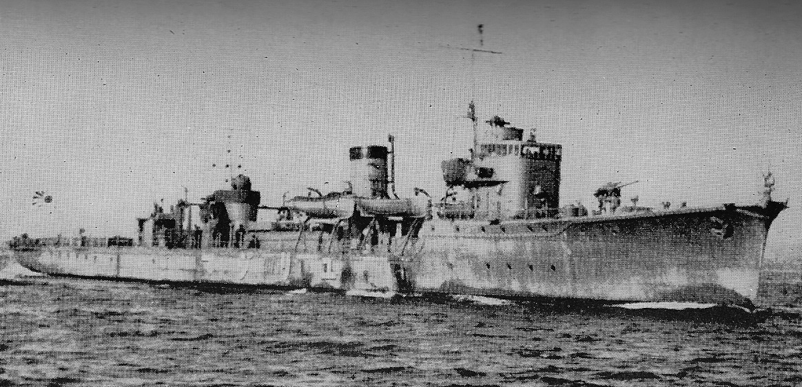
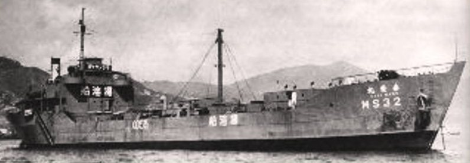
If Kuantan is a wreck with too many names, the wreck off Kapas Island may be one whose name is simply wrong. The local dive centres call it Yurijima, a Japanese minelayer reported torpedoed in 1945. I made two dives on it, off Kapas — a site that only gets dived now and then, and not on any regular schedule. That is where my doubts started.
The wartime record lists three Japanese ships lost in the general area of Kapas and Terengganu: the minelayer Yurijima and two tankers, Nanshin Maru 19 and Samui MV. The trouble is that the dive site doesn't sit where any of the three is charted. The nearest charted wreck is an unidentified entry in the UK Hydrographic Office database, and even that is some way from where we actually dived; the tanker Samui charts further off again, and Yurijima further still. Both Yurijima and Samui were around seventy metres long and twin-screw — close enough in outline that, in bad water, one could be taken for the other.
And the water was bad. The surface was flat calm and the weather perfect, but below twenty metres a current came on and the visibility dropped to the point where careful observation became guesswork. I am not a researcher, and I won't insult the people who are by pretending these were survey conditions. I am an amateur who pays attention, so with that caveat right out front, here is only what I think I saw.
The wreck is heavily encrusted and the superstructure has mostly collapsed, which fits a hull that has been down since the war — much like wrecks of the same age I've seen in Palau and Coron. A buoy line was tied to something the divemaster called a gun. Under the coral and the draped fishing net I genuinely couldn't tell whether it was a gun, a crane, or a mast, but its position caught my eye — right up near the bow, only three or four metres back. In the photos I've seen of Yurijima, the forward gun sits much further aft, ahead of the midships superstructure, not at the bow. The bow itself had an odd raised section, like the ones in photos of a standard Japanese wartime tanker type. Just aft of the gun the deck seemed to step down. Amidships I thought I could make out pipes and valve assemblies. And the stern was the strangest part: behind what looked like an aft superstructure was a structure I can only describe as wheel-like, with radial spokes, and then the end of the ship — a shape and a position that reminded me of an anti-aircraft gun platform I once saw on the Helmet Wreck in Palau. Feature by feature, what I saw didn't match the photos of Yurijima.
None of this is enough to conclude anything, and dressing it up as more would be exactly the kind of overreach I want to avoid. But the questions are real, and they aren't mine to answer alone. Is this Yurijima at all, or is it Samui, or some smaller Japanese ship that never made it cleanly into the record? A single clear dive — enough time to trace the keel line, count the shafts, and look properly at that stern — would probably settle it, and the divers based here are far better placed to make it than I am. I hope they do.
I'm not a historian and I'm not trying to be one. The people who run these boats and dive this water know it better than any chart, and the work of naming these wrecks is theirs to lead. What I can offer is a nudge — to them, and to you.
Because here is what both wrecks taught me. The real mysteries on this coast — the wrecks whose names are honestly still open — weren't the deep, far-offshore, technical kind. They sat at ordinary depths, reachable by any competent diver who is willing to put in the effort to get there. The famous giants will always get the attention, and they have earned it. But the real frontier on Malaysia's east coast is the quiet steel beside them. You don't have to go deep to find it. You only have to look past the names everyone already knows, and ask the people who were here first.
After this piece was drafted, I spent some time in the digital holdings of Singapore's National Library — a resource I should have found earlier. Searching the Straits Times for November 1992, I found a short news item dated 10 November of that year reporting the loss of the Marvin in the South China Sea off the east coast, with details that match the UKHO account closely: a heavy list in bad weather, the crew taken off, the ship gone.
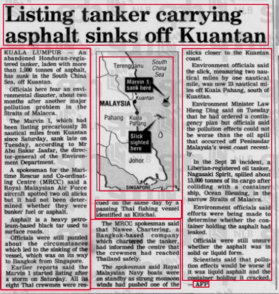
And this time I think the case is closer to closed than I was willing to say in the body of this piece. The divers who reported reading Nichi Asu Maru on the starboard side in 2016 also noted — and I had underweighted this — that the ship was known locally as Marvin, and that the original name had simply never been painted over after the rename. Which means the name on the hull and the name in the UKHO record are not in contradiction at all. They are the same ship at two points in its life: built and first registered as Nichi Asu Maru, later renamed Marvin 1, and still wearing the old name on the steel when it went down in November 1992. A contemporary newspaper report, a Lloyd's entry, a UKHO chart position, and now the divers' own account — all four pointing the same way. I am as confident as I can be without a builder's plate in my hand: this is the Marvin 1, and it was the Nichi Asu Maru before that.